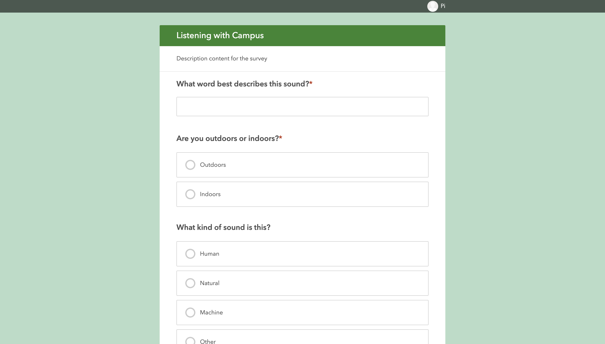

Final Project
This final assignment is project-based in which we will create a corpus of local relevance to the campus and analyze it for what it can tell us about the contents and about the technologies creating the corpus.
This final assignment is project-based in which we will create a corpus of local relevance to the campus and analyze it for what it can tell us about the contents and about the technologies creating the corpus.
Listening with Campus
Malak Mansour, Pi Ko
May 19, 2022 - 1700 words . 5.7 min read
💻 Note : Please view the article on computer for best experience.
F our class final project, we are colloboratively working together as the whole class to collect the geospatial data of different sounds across New York University Abu Dhabi campus, visualize, analyse, and take out key trends and observations from them. Together, we collected a total of 674 data points over a duration of 52 days (from 27th March 2022 to 18th May 2022).
The key idea of the project is not to come up with an objective sound-map of the campus, but rather to pay attention to the sounds on the campus and listen with extra attention to find out the patterns and trends about the campus we have not discovered before.
Figure : New York University Abu Dhabi Campus [Source]
Our campus, shown above, is located on a sandy island. However, the campus architecture features a good proportion of concrete and nature. Therefore, we expect a significant recordings of nature sounds.
For this project, the students are required to mainly collect the following data of 20 sounds they heard every week.
For the data collection, each student uses their mobile phone to record the data of the sound - not the sound itself. The students are allowed to record the data at any time, at any place on campus so long as 20 data points per week requirement is met. Survey123 Application by ArcGIS is used by the students on their phones to note down the details of the sound, as shown below.
Figure : Survey123 Application used for Data Collection
Students are instructed to use ArcGIS online to store, process and visualize their data. However, any other tools and technologies are also allowed so long as they achieve the task. For our duo, we will be using the following tools to process and visualize our data.
For processing, we exported the data collected by the whole class as GeoJSON format and imported it as a JavaScript object into this website.
⚠️ IMPORTANT : All the data visualization below are interactive. Make sure to click the data points, drag the map around and explore.
Initially, we plotted the data points of our entire raw dataset on the map of New York University Abu Dhabi campus as follows (Click on white points to see details about each sound). It can be seen that the data is relatively well spreaded across the campus, with slight concentration at the campus center. If you drag the map below up, you will see a lone outlier datapoint across Laffan Street. We highly suspect that datapoint is there due to the GPS approximation error. Otherwise, students have been widespread across the campus and have collected various sounds such as music, footsteps, screaming students 😱, professors talking, just to name a few.
Interactive Figure : Raw Data
However, this visualization of raw data does not tell much except to reveal the contents of the data. Therefore, for our next exploration, we will only be plotting the data points collected by the two authors (names anonymised on data points for privacy reasons). As seen in graph below, only the data points by the authors are selected and visualized. Different colors indicate different persons. Radius of datapoint indicates the floor (e.g. larger radius means the data is collected on a higher floor).
It can be seen that each of the authors mostly spend their time on one side of the campus only. It can also be seen that the data points of same color with large radii are concentrated in two parts of the campus only. This is the place where each of the author spends most of their time at (e.g. their dorm rooms). This means that from this data visualization, one is able to guess the details about the dwellings of the authors without actually knowing the exact information 🤯. It has been discussed in class that similar techniques are used by big tech companies to determine ones' house locations.However, it is shocking that same analysis can generate the results from a handful of data points we collected in class.
Interactive Figure : Locations of data points collected by authors. Radius represents height above ground.
Moreover, we will also perform filters in the overall dataset to find patterns. In the visualization below, each of the data point is color coded by their categories (Blue = Machine, Red = Human, Green = Natural, White = Other). Again, the radii represents the height above ground (larger radius = higher). It can be seen clearly that many of the blue data points have large radii, and green radii has the smallest data points except one or two. It means that the higher above the ground, there are more machine sounds, and the closer to the ground, there are more nature sounds. This is definitely expected due to the architecture of our campus, and is reflected in the data visualization.
It means that the higher above the ground, there are more machine sounds, and the closer to the ground, there are more nature sounds.
Interactive Figure : Data Points formatted by categories and height above ground
Moreover, the pie chart of the frequency of the categories is also plotted below. It is found that the 'Machine' category for the sounds have been reported the most with 284 sounds, followed by Humand and Natural categories.
In addition, we also extracted all the descriptions of the sounds, and analyzed the text in Voyant Tools to see the most frequent words. It is found that 472 unique words are used by the students to describe all the sounds. The most common 10 words are as follows.
| # | Word | Frequency |
|---|---|---|
| 1 | sound | 30 |
| 2 | birds | 21 |
| 3 | music | 16 |
| 4 | elevator | 15 |
| 5 | talking | 15 |
| 6 | ac | 14 |
| 7 | water | 14 |
| 8 | students | 13 |
| 9 | chirping | 12 |
| 10 | door | 12 |
It can be seen that apart from the word 'sound', 'bird' is the word which is most commonly used to describe the sounds on campus, followed by 'music'. Therefore, it can be said that the campus is green enough to attract all the birds. As seen in bar graph below, the frequency of the use of word 'bird' is significantly more than other words used to describe the sound.
It may seem as a contradiction that although the 'Machine' is the most frequent category of the sounds reported, 'Bird' is the most frequent word used to describe the sounds. However, it simply means that there are many more machines sounds than the bird sounds on campus, but the machine sounds are so diverse (e.g. AC, engines, vents) so that not one word can be used to describe them. Therefore, this finding suggests that the campus is mostly filled with machine sounds, which are dull.
Last but not least, the data points containing two most common words to describe the sounds (Bird and Music) is plotted separately below. Again, the radii represents the height above ground.
Interactive Figure : Birds
It can be seen that although the birds are frequent and concentrated at campus center on the ground, students also hear them while they are at their 6th floor dorm rooms, on the sides of the campus.
Interactive Figure : Music
Similar argument above can be also made for music. It seems when not at the campus center, students seem to listen to music (or hear music) high above the ground in their dorm rooms (except in dining halls, which always play music and are located on the ground).
From the data visualizations above, we can make the following generalizations about the campus.
We have also tackled some of the guiding questions and reflections presented in the guideline as follows.
What can sousveillance on our campus teach you?
It made us more aware and conscious of sounds on campus as we collected them.
To ask Lamden's question, what does this soundmapping exercise "have to do with privacy?"
It in a way violates the privacy of the students as it can create a map of where they go everyday and what sounds mostly stand out to them.
How does the creation of a Survey123 data collection exercise sit between raw data and information (Lamdan)?
Through cleaning the data collected from Survey123 (cleaning the raw data), we can analyze the cleaned data and generate information based on that.
What might you do with the data from this exercise to make campus a better place? or to tell an interesting story about campus to someone who has never been there?
We think that we can look at where unpleasant loud sounds were heard and work on implementing techniques on campus to reduce those sounds. Moreover, we believe that if we play most of the sounds collected for every location on campus to an external person who has never been on campus, they would have a great idea of what a regular student's experience on campus is, without setting foot on campus.
If you were to redesign this exercise what would you add? Subtract?
We would set reminders at constant times throughout the day to collect data. We would also make it obligatory to visit a new spot on campus and collect sounds from there at least once a week to make sure that the data collected is overall more encompassing.
How easy or complex was the data collection process? From analyzing the various fields, time and date stamps, do you think we have a good sample of observations about campus? a "good enough" sample? If you think that we need more data, how would we go about that process?
Because we went to the same set of places everyday, and collected the sounds that we observed, we think that the range of sounds was not as much as we expected it to be. Nevertheless, we were quite underwhelmed by the range of different sounds all across campus.
What kinds of sounds were noticed by the data collectors on campus? How much variety is there? What are the outliers?
We mainly noticed that students recorded sounds of birds chirping, crickets, professors speaking, and AC sounds. The most commonly used words to describe the sounds are mentioned above.
Did we accomplish the act of "listening with" our campus? Can you say that you have a new kind of awareness of, or connectedness with, the space in which we live? are we able to show empathy for others using data? or does the mapping process simply reinforce our resignation or surveillance realism? or does it reinforce the "atomisation" of individual action (Hintz et al)?
There is definitely a new kind of awareness achieved from this exercise. As we have to remember to record about twenty sounds a week, we now activate a new sense of listening closely “with campus” and recording any sounds that we observe.
Could this project have been carried out by non-human actors?
If the non-human actors moved around campus daily and explored different places on campus, then for sure they can even do it better than humans 🤖! However, some machine learning would have to happen prior to that by humans.
What do you think that machine learning might make of the data you collected?
It could classify certain areas around campus with the sounds that are most frequent there. It can then use this information to know where people mostly gathered at. In addition, it can identify any devices malfunctioning. For instance, if the sound if an AC is not present at its usual frequency, it means the AC is broken.
To us, the final project is akin to what we did during the screening of 32 Sounds, a film by Sam Green . During the screening of the film, we were asked to listen to the silence for a minute. As we go quiet for a long time, our sense of hearing deepens and we are able to hear sounds that we did not hear before. In this project, we are doing the same thing, but on the campus wide scale.
✓ Ready to Grade - 19th May 2022